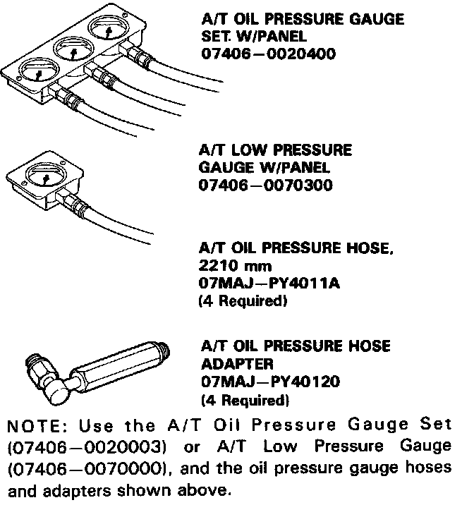
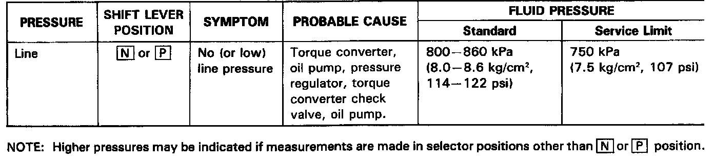
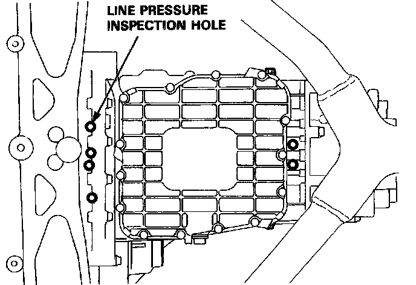
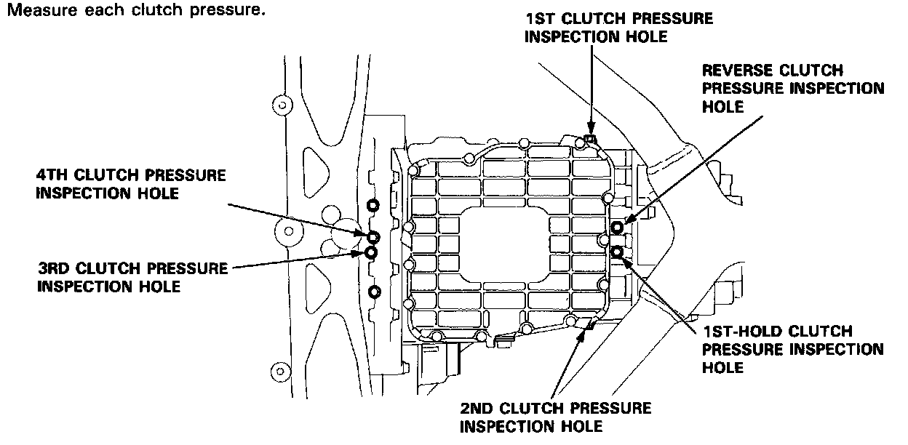
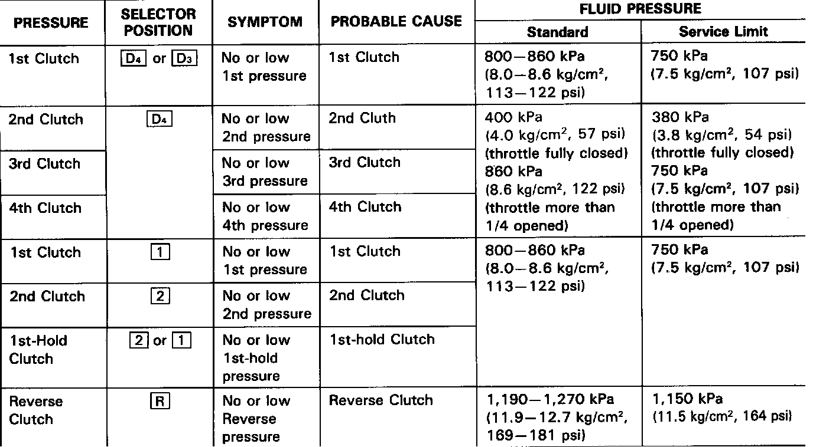
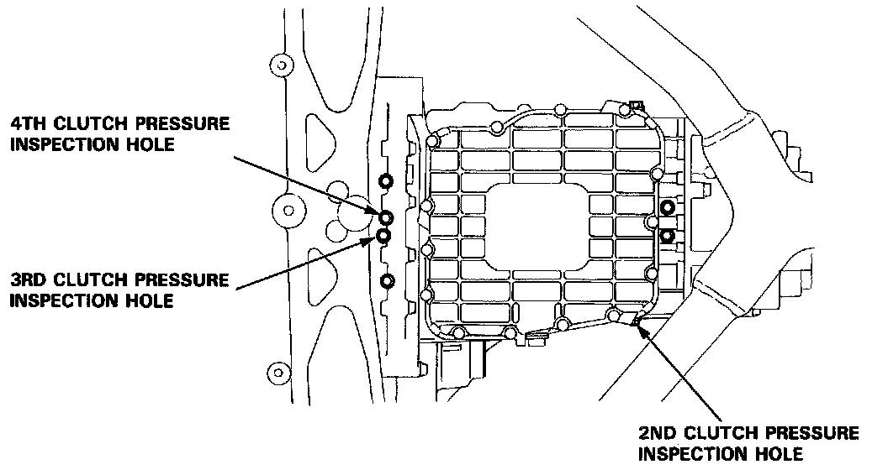
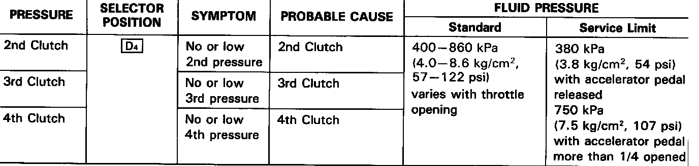
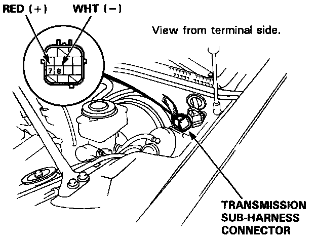
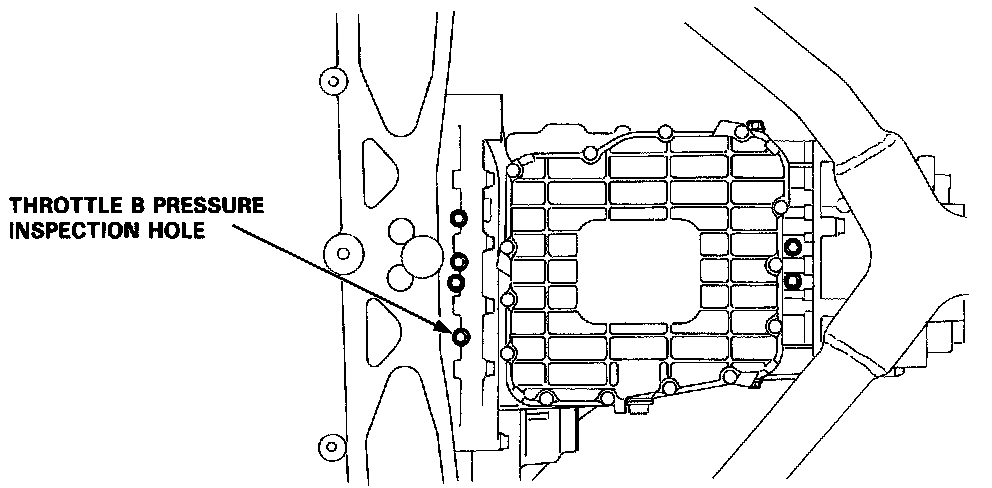
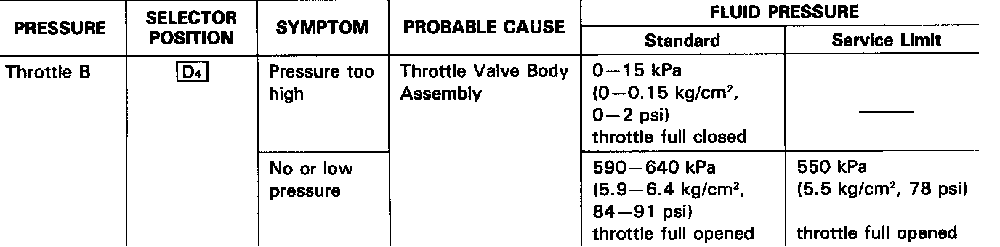

Pressure Testing
Pressure Testing
-(a) While testing, be careful of the rotating front wheels.
-(b) Make sure lifts, jacks, and safety stands are placed properly.
CAUTION:
-(a) Before testing, be sure the transmission fluid is filled to the proper level.
-(b) Warm up the engine to normal operating temperature (the radiator fan comes on) before testing.
1. Raise the car.
2. Warm up the engine, then stop the engine and connect a tachometer.
3. Connect the oil pressure gauge to each inspection hole(s).
18 Nm (1.8 kg-m, 12 lb-ft)
CAUTION: Connect the oil pressure gauge securely, be sure not to allow dust and other foreign particles to enter the inspection hole.


4. Start the engine and measure the respective pressure as follows.
-(a) Line Pressure
-(b) Clutch Pressure
-(c) Clutch Low/High Pressure
-(d) Throttle B Pressure
5. Install a new washer and the sealing bolt in the inspection hole and tighten to the specified torque. 18 Nm (1.8 kg-m, 12 lb-ft)
NOTE: Do not reuse old aluminum washers.
-(a) Line Pressure Measurement
-1. Set the parking brake and block both rear wheels securely.
-2. Run the engine at 2,000 rpm.
-3. Move the shift lever to [N] or [P] position.
NOTE: Higher pressures may be indicated if measurements are made in selector positions other than [N] or [P] position.
-4. Measure line pressure.

-(a) Clutch Pressure Measurement
While testing, be careful of the rotating front wheels.
-1. Set the parking brake and block both rear wheels securely.
-2. Raise the front of the car and support with safety stands.
-3. Allow the front wheels to rotate freely.
-4. Run the engine at 2,000 rpm.
-5. Measure each clutch pressure.


-(a) Clutch Low/High Pressure Measurement
While testing. be careful of the rotating front wheels.
-1. Allow the front wheels to rotate freely.
-2. Start the engine and let it idle.
-3. Shift the select lever [D4] position.
-4. Slowly press down the accelerator pedal to increase engine rpm until pressure is indicated on the oil pressure gauge. Then release the accelerator pedal, allowing the engine return to an idle, and measure the pressure reading.
-5. With the engine idling, press down the accelerator pedal approximately 1/2 of its possible travel and increase the engine rpm until pressure is indicated on the gauge, then measure the highest pressure reading obtained.
-6. Repeat steps - 4 and - 5 for each clutch pressure being inspected.


-(a) Throttle B Pressure Measurement
-(b) While testing, be careful of the rotating front wheels.
-1. Allow the front wheels to rotate freely.
-2. Disconnect the transmission sub-harness connector.
-3. Shift the select lever to D4 position.
-4. Run the engine at 1,OOO rpm.
-5. Measure full open throttle B pressure.

-6. Connect battery voltage to the linear solenoid terminals of the transmission sub-harness connector.


-7. Measure full closed throttle B pressure.